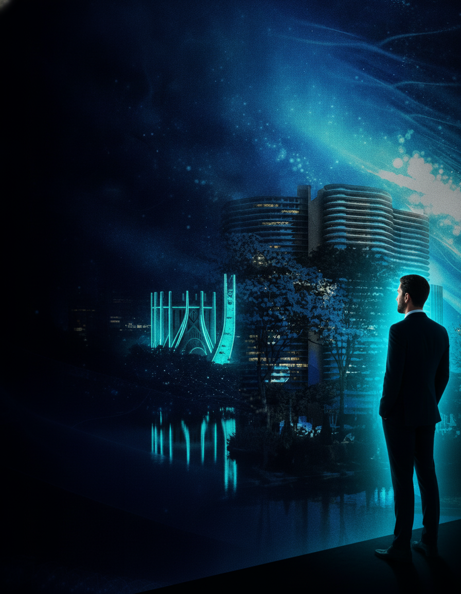

C-Levels reunidos em BH, a maior confraria cyber
Participe da edição mais exclusiva do CybersecFEST em Belo Horizonte e transforme seu networking.
INSCRIÇÕES ABERTAS
→

Participe da edição mais exclusiva do CybersecFEST em Belo Horizonte e transforme seu networking.